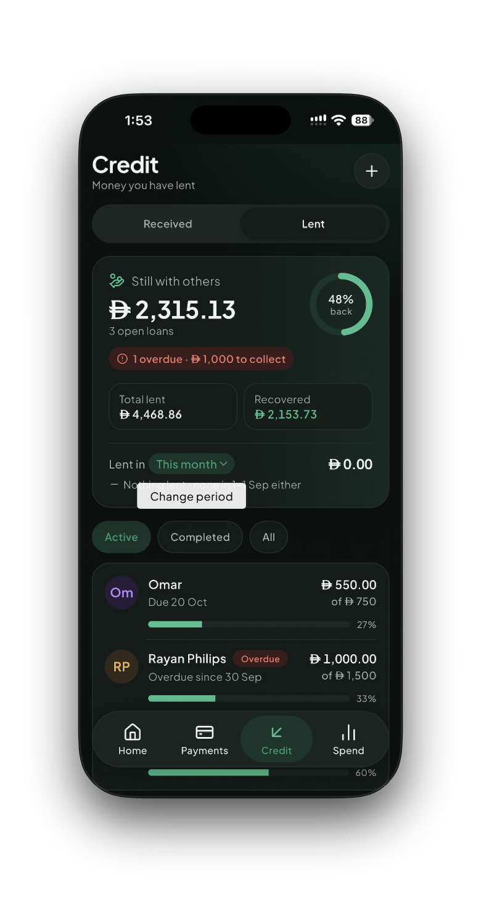
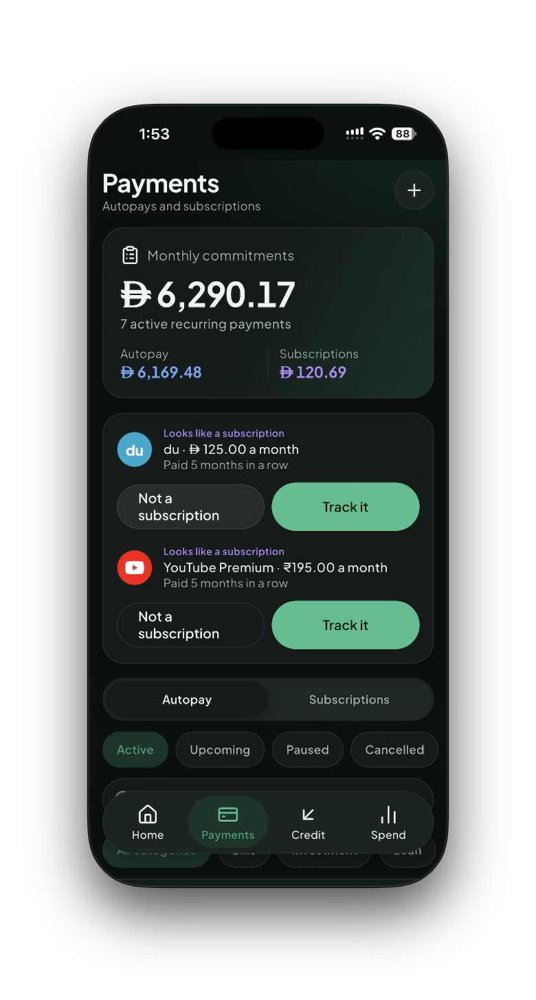
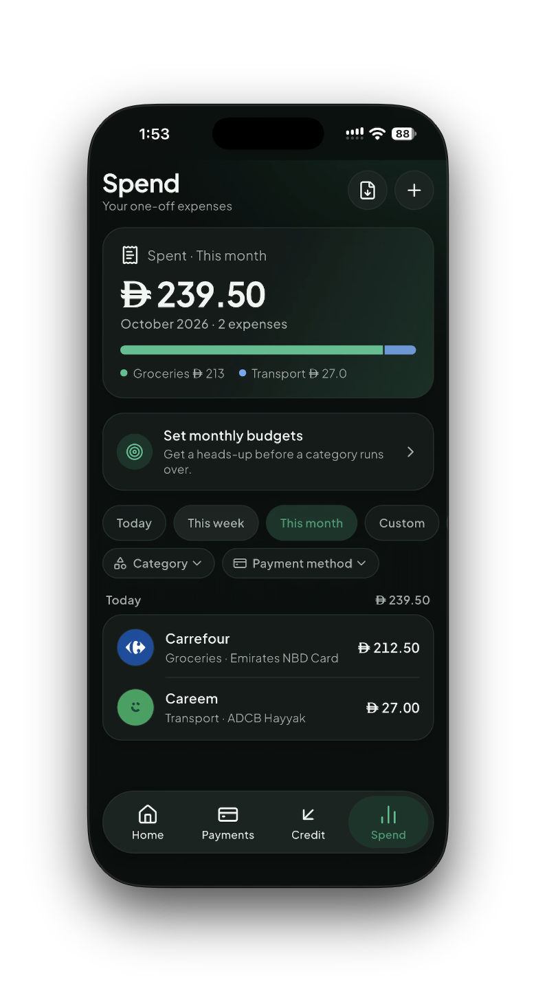
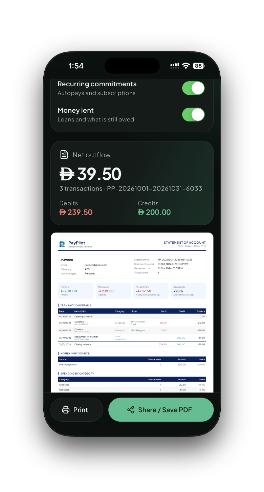
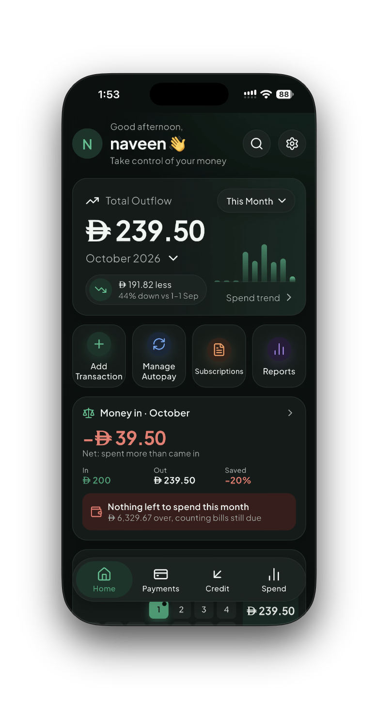

Clearer answers for everyday money.
Practical, plain-language guides about expense tracking, budgets, bank alerts, UPI, AED spending, loans, subscriptions, privacy, and cash flow.

UAEBest Expense Tracker App in the UAE: What to Look For
A practical checklist for comparing AED support, bank alerts, credit cards, rent, installments, privacy, and price.
Read guide →
IndiaBest Expense Tracker App in India: A Buyer’s Guide
Compare UPI, bank SMS, card payments, EMI, cash, budgets, loans, and privacy before choosing a personal finance app.
Read guide →
Automatic trackingHow an Automatic Expense Tracker Uses Bank SMS Alerts
Learn how transaction alerts can become expense records, what permissions are involved, and how to handle duplicates safely.
Read guide →UPIUPI Expense Tracker: Reduce Manual Entry Without Losing Control
A simple way to organise UPI payments, categories, merchants, and cash expenses in one personal money system.
Read guide →
BudgetingFree Budget App for UAE Residents: A Practical Setup
Build an AED budget around salary, rent, bills, card spending, subscriptions, and money set aside for goals.
Read guide →BudgetingFree Budget Tracker App for India: Start With the Basics
A beginner-friendly method for tracking salary, UPI spending, bills, EMI payments, and savings in INR.
Read guide →PrivacyExpense Tracker Without Bank Login: What It Can and Cannot Do
Understand the difference between bank-linking, local entry, SMS alerts, and notification-based tracking.
Read guide →
PrivacyPrivate Expense Tracker for Bank Alerts: A Permission Checklist
Questions to ask before allowing an app to process transaction messages or notifications.
Read guide →UAE expatsExpense Tracker for UAE Expats: AED, INR, and Two-Country Spending
A two-currency approach for salary, rent, remittances, travel, card charges, and spending across the UAE and home country.
Read guide →AEDHow to Track Expenses in AED Without Losing the Detail
Organise dirham spending while keeping foreign-card charges, exchange rates, and recurring commitments understandable.
Read guide →DubaiHow to Budget a Dubai Salary Around Rent, Bills, and Goals
A flexible monthly framework for rent, transport, groceries, subscriptions, savings, debt, and irregular annual costs.
Read guide →UAE billsHow to Track UAE Rent, Bills, and Installments
Make large, irregular, and recurring UAE commitments visible before they surprise your monthly budget.
Read guide →Everyday trackingHow to Track UPI, Card, and Cash Expenses Together
Combine digital transactions with cash spending so your monthly total does not have blind spots.
Read guide →Privacy and safetyIs an SMS Expense Tracker Safe? Questions to Ask First
A plain-language checklist for SMS permissions, on-device parsing, cloud sync, OTP filtering, and deletion.
Read guide →ComparisonSMS Expense Tracker vs Bank Login Sync: Which Fits Better?
Compare alert-based capture with direct bank connections by privacy, coverage, reliability, and setup effort.
Read guide →iPhoneHow Apple Pay Expense Tracking Works on iPhone
Set expectations for Apple Pay automation, bank messages, merchant details, and the limits of Wallet triggers.
Read guide →AndroidHow to Automatically Track Bank Notifications on Android
Understand notification access, supported payment apps, duplicate alerts, and privacy controls on Android.
Read guide →Credit cardsCredit Card Spending Tracker: See Purchases Before the Bill Arrives
Track card purchases, recurring charges, due dates, and outstanding commitments in one view.
Read guide →LoansBest Loan Tracker for Money Lent to Friends and Family
Keep informal loans clear with borrower, amount, due date, repayments, and outstanding balance.
Read guide →LoansHow to Track Loan Repayments Without Losing the History
A simple ledger method for partial repayments, overpayments, due dates, and completed loans.
Read guide →SubscriptionsBest Subscription Tracker for Monthly Bills and Renewals
Find recurring charges, upcoming renewals, and the monthly cost of the services you keep paying for.
Read guide →SubscriptionsHow to Stop Subscription Creep Before It Eats Your Budget
A practical audit for forgotten trials, duplicate services, annual renewals, and small charges that add up.
Read guide →IncomeIncome and Expense Tracker: See the Whole Money Picture
Pair money in with money out so your monthly summary answers more than “where did I spend?”
Read guide →Cash flowPersonal Cash Flow Tracker: Money In vs Money Out
Understand the monthly relationship between income, spending, commitments, repayments, and savings.
Read guide →PlanningSafe to Spend: A Better Number Than Your Current Balance
A plain-language explanation of subtracting spent money and upcoming bills before deciding what is available.
Read guide →FreelancersExpense Tracker for Freelancers With Variable Income
Build a personal system for irregular invoices, tax reserves, subscriptions, business costs, and quiet months.
Read guide →NRIsExpense Tracker for Indian NRIs in the UAE
A cross-border tracking method for AED salary, INR transfers, home-country bills, travel, and family support.
Read guide →AlternativesWallet App Alternatives for Private Expense Tracking
Compare what matters when moving from a traditional money manager to a privacy-first, local-first tracker.
Read guide →AlternativesMoney Manager Alternatives With Automatic Expense Capture
Compare manual ledger apps with automatic bank-alert and notification capture.
Read guide →ComparisonsExpense Tracker App vs Spreadsheet: Which Is Easier to Maintain?
A fair comparison of flexibility, setup time, recurring data, mobile capture, charts, and long-term consistency.
Read guide →